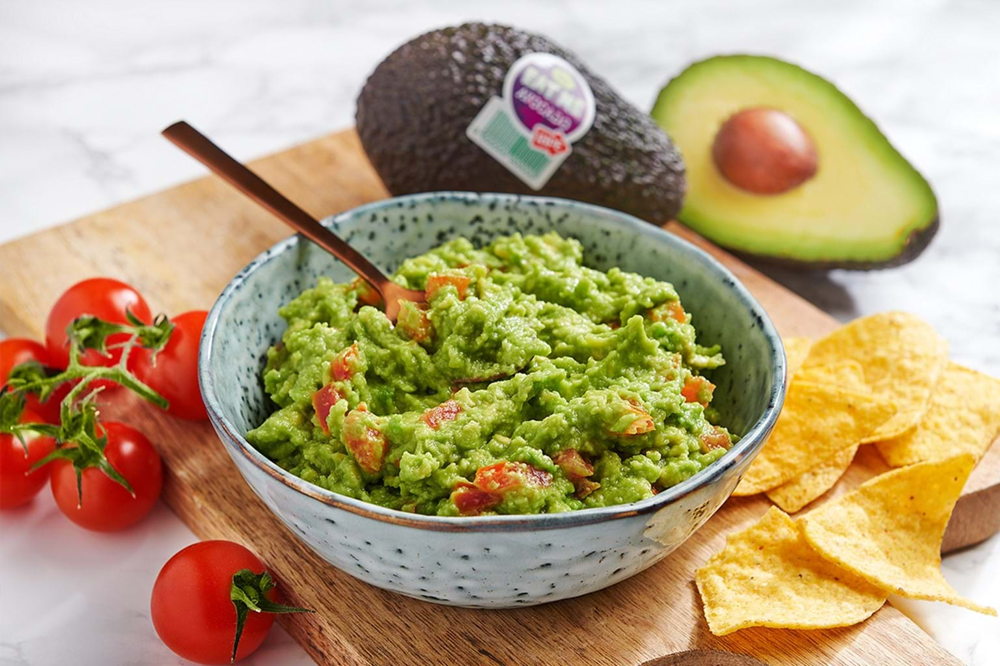

Guacamole

Description:
Guacamole is an avocado-based dip, spread, or salad first developed in Mexico.
In addition to its use in modern Mexican cuisine, it has become part of
international and American cuisine as a dip, condiment and salad ingredient.
Ingredients:
- 2 tablespoons minced fresh serrano chili
- 1/2 cup chopped fresh cilantro, divided
- 1/4 cup finley diced white onion
- 1/2 teaspoon kosher salt for grinding vegetables, plus more to taste
- 4 large Hass avocados
- 1 cup diced ripe tomatoes, drained (Optional)
- 1 lime, juiced, or more to taste
Steps:
-
Place minced peppers, 1/4 cup of the chopped cilantro, and the diced onions
on a cutting board. Chop them together into very small pieces. Sprinkle with
kosher salt. Using the flat side of the knife blade, smear the mixture to work it
into a paste, and chop again to achieve as fine texture as possible.
-
Stem, halve, and pit the avocados. Scoop out flesh and place in a bowl.
-
Add 1/4 cup chopped cilantro, onion and serrano mixture, salt, and fresh lime
juice. Mash with a potato masher to desired texture (smooth or chunky), five or
six minutes.
-
Taste and adjust seasonings. If not serving immediately, cover and refrigerate.
Source
Back